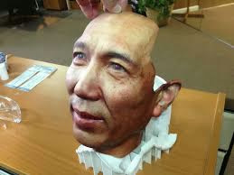
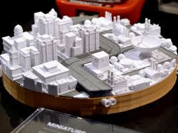
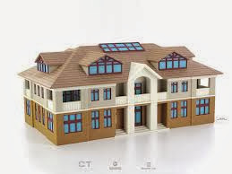
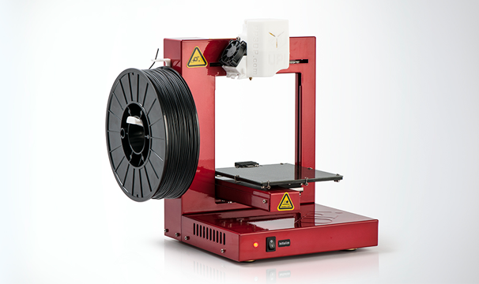

3D Printing atau dikenal juga sebagai Additive Layer Manufacturing adalah proses membuat objek padat 3 dimensi atau bentuk apapun dari model digital. Cara kerjanya hampir sama dengan printer laser dengan tehnik membuat objek dari sejumlah layer/ lapisan yang masing-masing dicetak di atas setiap lapisan lainnya.
Cara Kerja dan Mekanisme Pada 3D Printing
Secara umum cara kerja printer 3D dibagi menjadi dua yaitu Printing dan Finishing. Printing terjadi saat jika telah selesai didesain 3D Robotnya Anda bisa langsung print di printer 3D. Proses mencetak pun dimulai, lamanya mencetak tergantung besar dan ukuran model. Kemudian Finishing, setelah dicetak, proses finishing pun dilakukan, dengan melihat hasil cetakan dari desain 3D robot yang Anda buat.
Kemudian mekanisme diawali dari Stereolithography (SLA) adalah teknik pertama untuk 3D Printing. Caranya adalah menambahkan layer terus menerus pada bahan photopolymer menuju keatas. Material yang digunakan pada awalnya adalah liquid (cairan) dan akan mengeras ketika liquid tersebut terkena sinar ultraviolet.
Lalu Digital Light Processing (DLP), pada proses penyinaran digital, objek pada awalnya berbentuk liquid yang penuh. Sebagian dari liquid tersebut akan disinari, yang tentu saja akan mengeraskan liquid tersebut, lalu objek yang mengeras akan tenggelam kebawah dan menaikkan liquid selanjutnya. Proses ini terus menerus dilakukan hingga objek 3D tersebut berhasil dibuat.
Kemudian Selective Laser Sintering (SLS), menggunakan tenaga yang sangat tinggi untuk menggabungkan berbagai material, seperti plastik, gelas, keramik, dan metal menjadi output 3D.Dan Electron Beam Melting (EBM), adalah proses dari 3D Printing untuk bahan metal. Prosesnya di sebuah vakum dan memulai prosesnya dengan menyebarkan sebuah layer dari metal powser (lebih sering menggunakan titanium). Electron beam akan mencairkan powder menjadi layer yang keras. Objek yang dibuat dengan teknik ini akan sangat kuat.
Setelah itu tahap selanjutnya adalah Multi Jet Modelling (MJM) mempunyai cara kerja yang sama dengan inkjet printer. Ia menyebarkan sebuah layer dari resin powder dan menyemprotkan sebuat lem yang mempunyai berbagai warna dan akan mengeras pada satu layer. Multi Jet Modelling sangatlah berguna karena sangat cepat dan mendukung penyediaan warna.
Dan yang terakhir adalah Fused Deposition Modelling (FDM), menggunakan bahan nozzle yang dipanaskan dan akan melelehkan bahan seperti plastik pada hasil vertikal yang diatur oleh komputer. Ketika material keluar dari nozzle, material tersebut akan mengeras.
Cara Kerja 3D Printing
Contoh Hasil Produk 3D Printing

Wajah ManusiaWajah Manusia

produk3D3

produk3D5
Jenis - Jenis 3D Printer

UP Plus-2 Clean CutMarkerBot Replicator Z18MarkerBot Replicator 2X ExperimentalFlashForge Finder
Teknik yang digunakan Pada 3D Printing
1.Stereolithography (SLA)
Teknik pertama untuk 3D Printing. Caranya adalah menambahkan layer terus menerus pada bahan photopolymer menuju keatas. Material yang digunakan pada awalnya adalah liquid (cairan) dan akan mengeras ketika liquid tersebut terkena sinar ultraviolet.
2.Digital Light Processing (DLP)
Teknik yang hampir sama dengan SLA yang membuat bahan liquid mengeras dengan sinar ultraviolet. Tetapi, pada proses penyinaran digital, objek pada awalnya berbentuk liquid yang penuh. Sebagian dari liquid tersebut akan disinari, yang tentu saja akan mengeraskan liquid tersebut, lalu objek yang mengeras akan tenggelam kebawah dan menaikkan liquid selanjutnya. Proses ini terus menerus dilakukan hingga objek 3D tersebut berhasil dibuat.
3. Selective Laser Sintering (SLS)
SLS menggunakan tenaga yang sangat tinggi untuk menggabungkan berbagai material, seperti plastik, gelas, keramik, dan metal menjadi output 3D.
4. Electron Beam Melting (EBM)
Proses dari 3D Printing untuk bahan metal. Prosesnya di sebuah vakum dan memulai prosesnya dengan menyebarkan sebuah layer dari metal powser (lebih sering menggunakan titanium). Electron beam akan mencairkan powder menjadi layer yang keras. Objek yang dibuat dengan teknik ini akan sangat kuat.
5. Multi Jet Modelling (MJM)
Mempunyai cara kerja yang sama dengan inkjet printer. Ia menyebarkan sebuah layer dari resin powder dan menyemprotkan sebuat lem yang mempunyai berbagai warna dan akan mengeras pada satu layer. Multi Jet Modelling sangatlah berguna karena sangat cepat dan mendukung penyediaan warna.
6. Fused Deposition Modelling (FDM)
Menggunakan bahan nozzle yang dipanaskan dan akan melelehkan bahan seperti plastik pada hasil outputnya. Nozzle tersebut akan berpindah secara horizontal dan vertikal yang diatur oleh komputer. Ketika material keluar dari nozzle, material tersebut akan mengeras.
7. Semua aktivitas 3D Printing kebanyakan akan menggunakan STL File
STL File merupakan format 3D modelling yang membuat 3D Printer melakukan tugasnya dengan nyaman dan efektif untuk memotong objek dari layer pada saat print. Kebanyakan file STL dibuat oleh Computer Aided Design (CAD).
Kelebihan dan Kekurangan Pada 3D Printing
Kelebihan 3D Printing
1. Dapat mengerjakan 2 pekerjaan sekaligus yaitu membuat benda sekaligus dapat langsung mewarnai benda tersebut.
2. Dapat membuat suatu objek dengan tingkat kerumitan yang tinggi.
3. Apabila ada kesalahan gambar pada scanning bisa langsung diperbaiki dan diubah sesuai dengan keinginan kita.
4. Lebih mudah digunakan dibandingkan dengan rapid manufaktur lainnya.
Kekurangan 3D Printing
1. Mengurangi daya kreatifitas free hand
2. Mengurangi tenaga kerja para pengrajin.
3. Dapat menimbulkan rasa kemalasan pada masa mendatang.
4. Tidak praktis dalam beberapa hal, salah satunya adalah materil pembentuk. 3D Printer juga memiliki keterbatasan yakni bisa menyediakan satu jenis material saja untuk satu mesin saja.